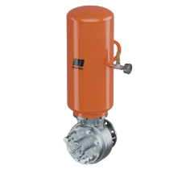
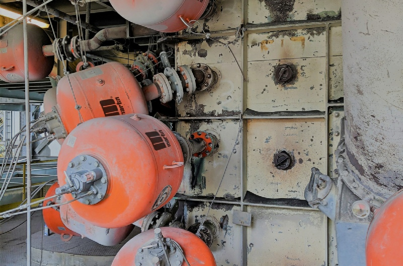

ایر بلاسترهای مارتین؛
قدرت هوای فشرده برای جریان بهتر مواد
تأمین و فروش ایر بلاستر صنعتی برای کاهش گرفتگی، طاقبستن و تجمع مواد در سیلوها، هاپرها و مسیرهای انتقال. برای انتخاب مدل مناسب، مشخصات تجهیز و شرایط کاری خود را ارسال کنید.

برای هر نقطه از خط تولید، یک راهکار هدفمند
از رفع گرفتگی خروجی مخزن تا کمک به حرکت مواد چسبنده و مرطوب، ایر بلاستر را بر اساس کاربرد واقعی انتخاب کنید.


طراحی سایت بر پایه فروش واقعی، نه فقط معرفی محصول
رفع گرفتگی
کمک به آزادسازی مواد چسبیده و کاهش طاقبستن در مسیرهای فرآیندی.
مصرف هوای بهینه
در سایت فعلی، مصرف متوسط کمتر از ۰٫۳ مترمکعب در دقیقه ذکر شده است.
نصب صنعتی
قابل استفاده روی سیلوها، هاپرها و داکتها با جانمایی مناسب.
پشتیبانی فنی
برای انتخاب مدل، شرایط مواد و نحوه نصب، پیش از خرید مشاوره بگیرید.

وقتی جریان مواد متوقف میشود، زمان و هزینه هم متوقف میشوند.
تجمع مواد در سیلوها، هاپرها و تجهیزات فرآیندی میتواند ظرفیت تولید را پایین بیاورد. ایر بلاستر با یک پالس هوای فشرده، به بازگشت جریان مواد کمک میکند.
تجهیزات را قبل از تصمیم خرید ببینید
تصاویر و مستندات موجود در وبسایت قبلی در طراحی جدید حفظ شدهاند تا ظاهر جدید، محتوای قدیمی و ارزش سئویی آن را از بین نبرد.


مدل مناسب پروژهتان را نمیدانید؟
نوع ماده، محل نصب، ابعاد مخزن یا داکت و شرایط کاری را بفرستید تا قبل از خرید، مسیر انتخاب تجهیز را با شما بررسی کنیم.
ارسال درخواست استعلام